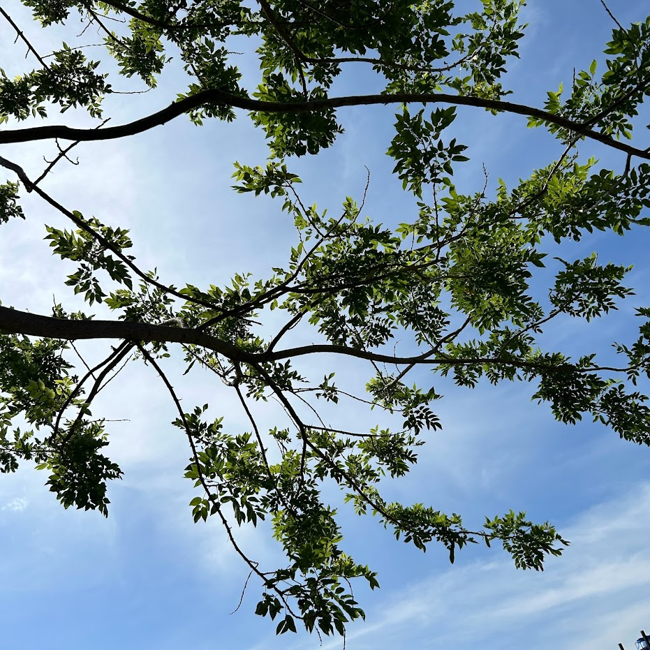
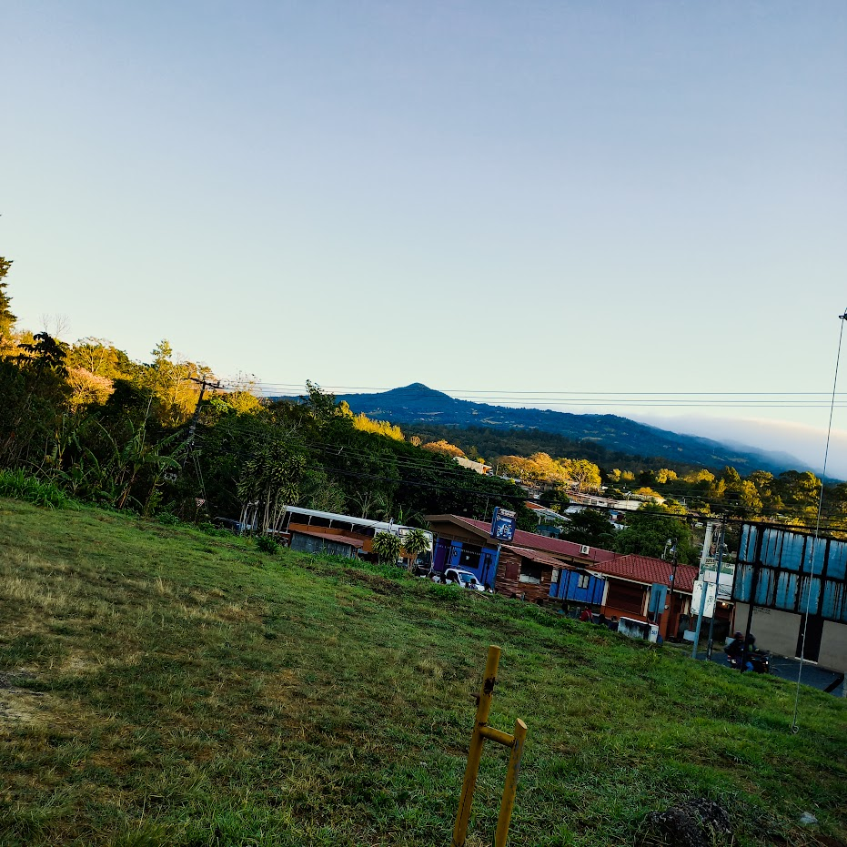
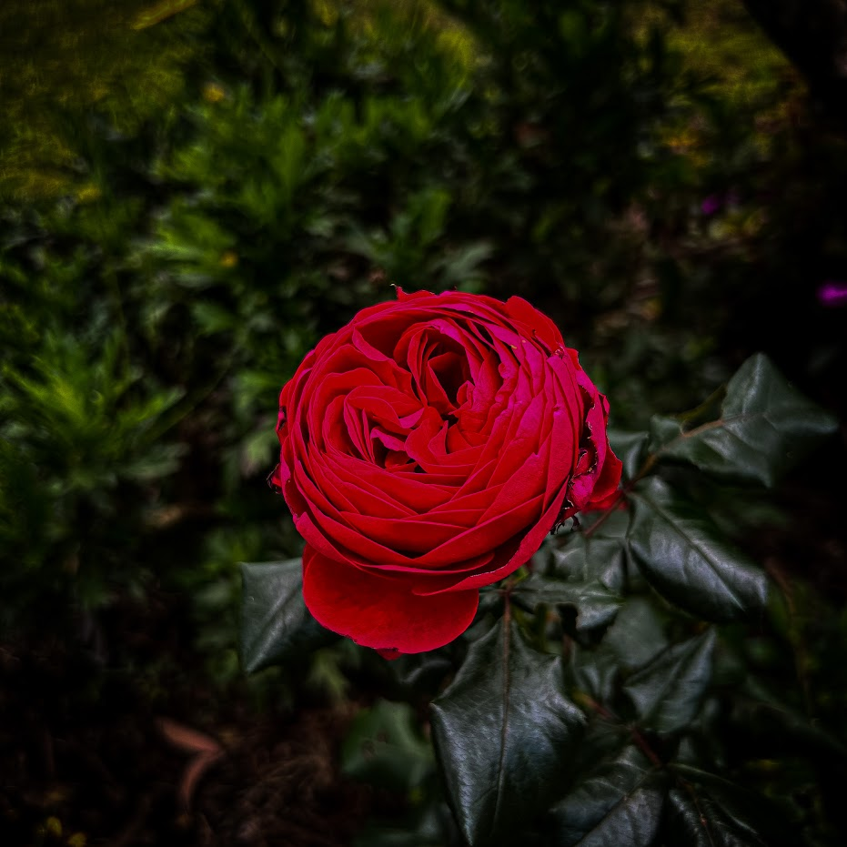
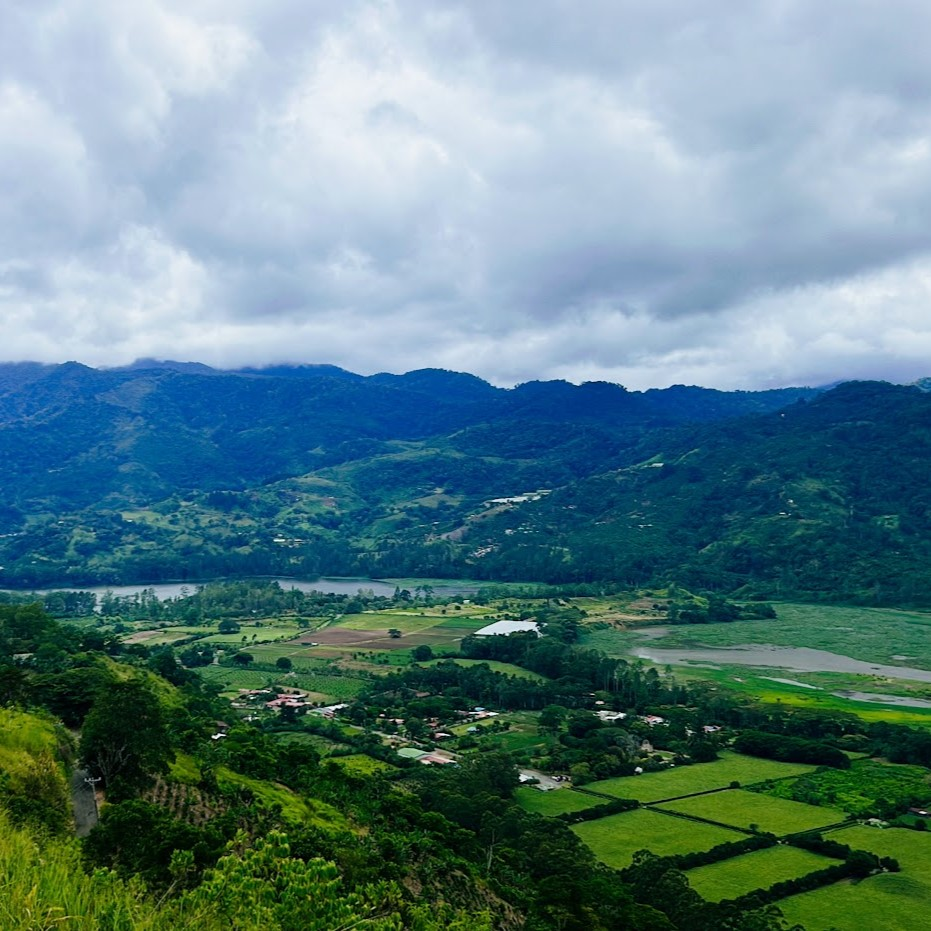

Hobbies and Interests: A Glimpse into My World
Capturing Moments: My Entry into Photography
I'm venturing into the world of photography, drawn to capturing moments that resonate with perfection.
My journey is one of exploration and learning, where I eagerly await those instances that perfectly
encapsulate beauty, emotion, or a unique story. This emerging passion is not just about taking pictures;
it's about discovering and sharing
the world through my lens, focusing on the intricate dance of light,
shadow, and color. Each snapshot marks a step in my evolving path
as a photographer, constantly in
pursuit of those fleeting, perfect moments.





Music
My musical tastes lean towards the unique and thematic, with a special place for Nordic-inspired
music."Valhalleluja"
by NANOWAR OF STEEL is a standout favorite, exemplifying a blend of
humor and heavy metal that captivates me.
This track reflects my appreciation for innovative music that merges tradition with modernity,
offering a glimpse into the diverse soundscapes that inspire me.